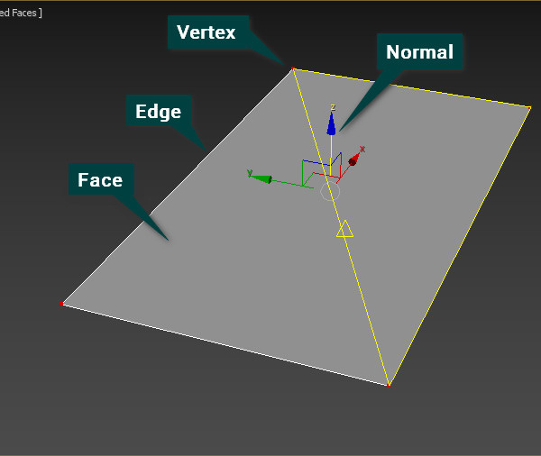
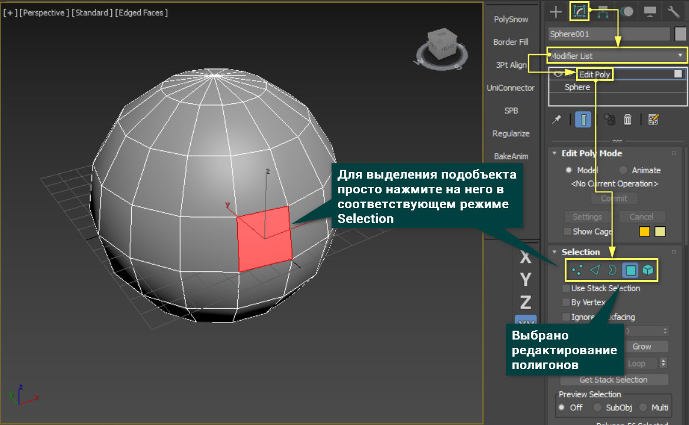
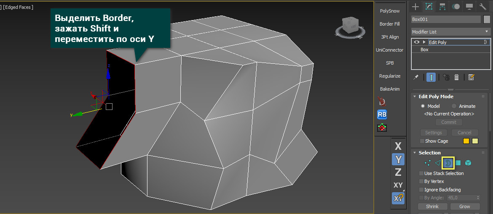
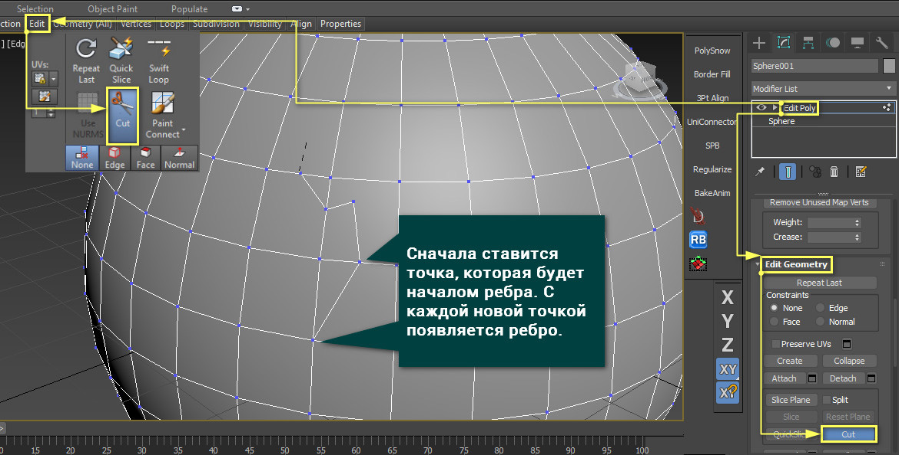
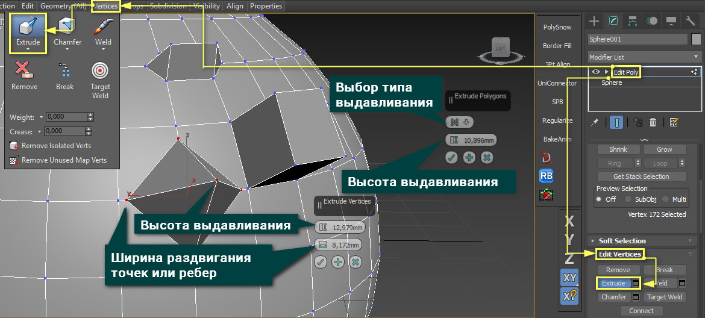
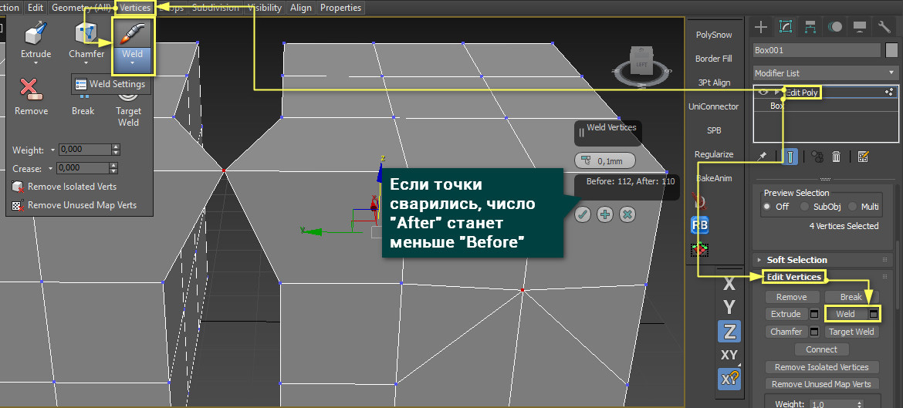
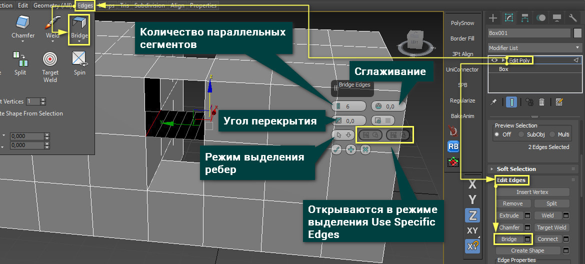
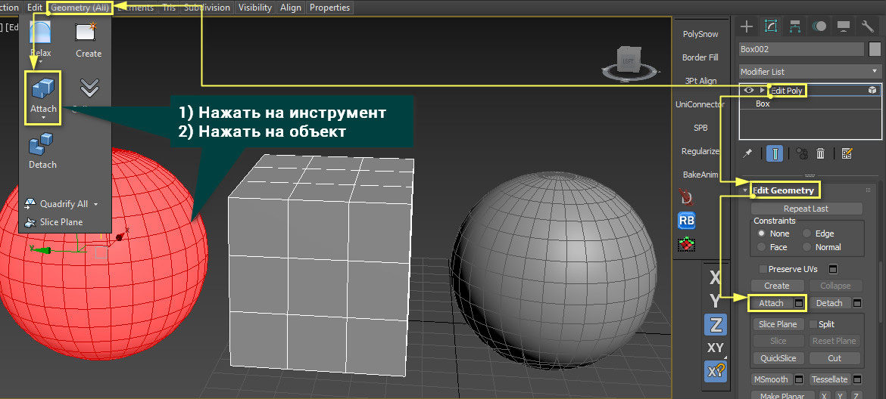

Полигон в свою очередь состоит из нескольких элементов: точки (Vertex), ребра (Edge), фейсы (Face) и нормали (Normal).
Vertex - это вершина плоскости, которая представляет собой полигон, и точка пересечения ребер.
Для того, чтобы выбирать подобъекты, необходимо включить редактирование точек (Vertex), ребер (Edge), краев (Border), полигонов (Polygons) или элементов (Elements) в разделе Selection. После этого понадобится только нажать на те подобъекты, которые нужно менять.
Точкой, ребром и целым полигоном можно управлять с помощью стандартных инструментов передвижения, вращения и масштабирования. Эти инструменты можно найти на панели Main Toolbar. Это самый базовый способ придания формы и формирования целого объекта.
Взаимодействие с точками немного отличается в зависимости от того, сколько точек выделено. Если выделена одна точка, то ее можно только двигать. Другие инструменты эффекта не дадут. К другим типов редактирования это не относится.
Если выделено две и более точек, то их можно перемещать все вместе, а также вращать и масштабировать вокруг их общего центра. Все то же самое справедливо и для остальных типов редактирования.
Удалить полигоны можно клавишей Delete. Точки и ребра лучше удалять клавишей Backspace.
Так же стоит сказать об одном очень удобном способе создания формы с помощью клавиши Shift. С помощью это клавиши легко копировать объекты. Так же копировать можно и полигоны. Но если попытаться скопировать так край (Border), то он вытянется вместе с новыми полигонами. Используя инструменты передвижения, вращения и масштабирования с зажатой клавишей Shift, можно создать практически любую форму даже из одного полигона.
Этот инструмент позволяет создавать новые ребра между уже существующими ребрами или точками. С его помощью очень удобно создавать новые полигоны или исправлять существующую сетку. Находится он в разделе Ribbon – Edit или Edit Poly – Edit Geometry для всех типов редактирования.
Он позволяет «выдавливать» полигоны, создавая при этом новые. Этот инструмент очень хорош для быстрого наращивания новой формы. Находится он в разделе Ribbon – Edit или Edit Poly – Edit Vertices/Edges/Borders/Polygons. Выдавливать можно во всех типах редактирования, кроме Elements. Делать это можно «на глаз» или по единицам измерения в разделе Extrude Settings. Сначала выбираете элементы, которые хотите выдавить, а затем просто меняете параметры. Параметры для разных типов редактирования немного отличаются.
С его помощью можно "сварить" между собой две или более точек, превратив в одну. Большим плюсом инструмента является то, что он может объединять точки разных элементов одного объекта, превращая две половины в одну полную часть. Для доступа к инструменту нужно выбрать Vertex – Edit Vertices/Edges – Weld/Weld Settings. Weld имеет всего один параметр, представляющий собой расстояние, на котором будут объединяться все выбранные точки. Число точек до сварки и после показаны в значениях Before и After.
Инструмент для быстрого соединения ребер или полигонов новыми полигонами. Это очень хороший инструмент закрытия пробелов в геометрии, но имеет недостаток. Bridge строит полигоны по прямой, поэтому, если топология сложнее, придется поправлять сетку вручную. Найти его можно в разделе Ribbon – Edges/Borders/Polygons или Edit Poly – Edit Edges/Borders/Polygons.
Инструмент для присоединения новых объектов к уже имеющемуся. Если вам нужна сфера, зачем ее моделировать самостоятельно, если можно просто присоединить? Это позволит редактировать совместно два объекта и создавать сложные формы. Находится Attach в разделе Ribbon – Geometry или Edit Poly – Geometry. Присоединять можно независимо от типа редактирования.
В этой статье описаны лишь основные инструменты, которые позволят заниматься полигональным моделированием. Ни в коем случае нельзя останавливаться на описанном. Надо пробовать, испытывать и узнавать новые инструменты. Чем больше функций вы будете знать, тем более эффективно вы сможете организовать свою работу.